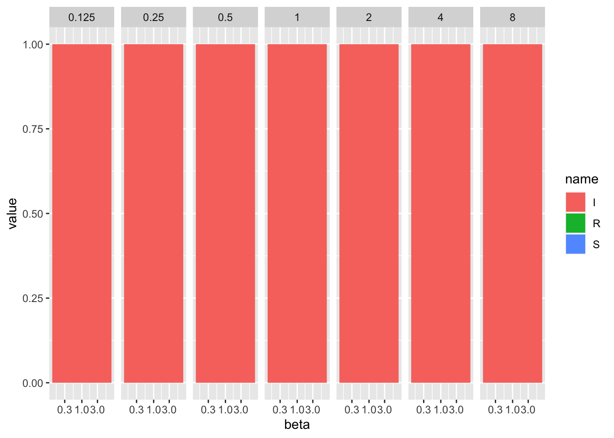
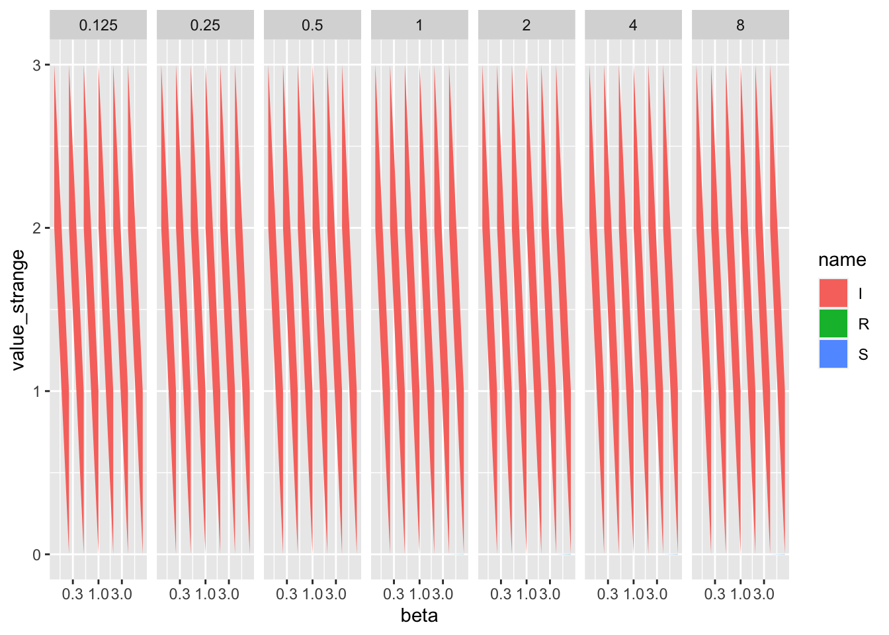
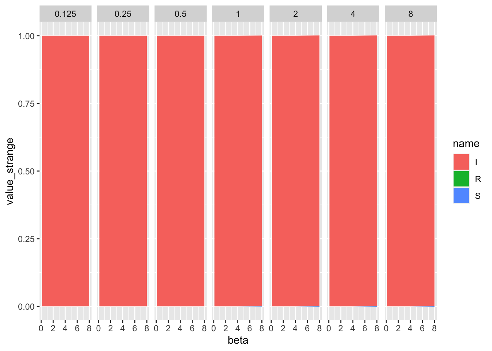
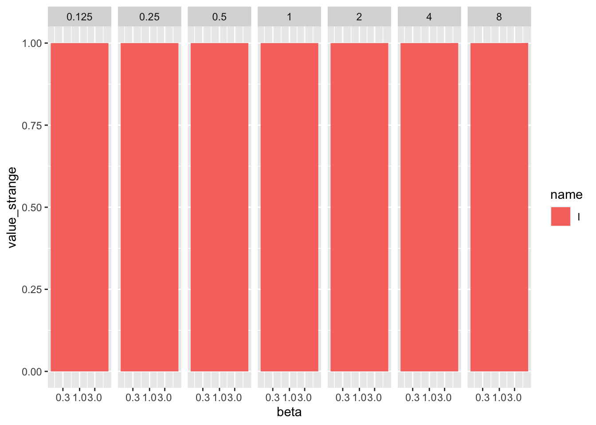
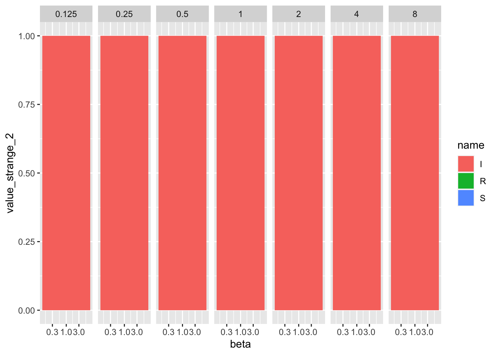

library('tidyr')
library('tibble')
library('ggplot2')
library('dplyr')
Attaching package: 'dplyr'The following objects are masked from 'package:stats':
filter, lagThe following objects are masked from 'package:base':
intersect, setdiff, setequal, uniongrid_values <- 2^(-3:3)
strange_values <- c(-1.90819287770871e-06, -1.68820727726686e-20, 1.90820561104585e-06,
-2.03934646947346e-11, -2.66724989539021e-44, 1.82186185543446e-11,
-3.08642000845794e-14, -2.84079624478981e-68, 3.8017746773927e-20,
-1.55431223447522e-14, -2.12106623568441e-87, -7.04031177308046e-34,
1.99840144432528e-15, 6.92960775272386e-94, -2.17911262386235e-50,
6.43929354282591e-15, 1.60655203590779e-101, -2.4149683145618e-74,
4.2188474935756e-15, -1.63364987668272e-101, -8.43744249369279e-100,
-1.9234795292089e-06, -1.40915667489693e-20, 1.92348291032148e-06,
-7.86031240096463e-11, 5.94869638827445e-40, 1.70218514362265e-11,
-6.21724893790088e-15, -5.32110095875999e-63, 3.9895815730536e-20,
2.39808173319034e-14, -9.91626723546227e-86, -2.47375723122866e-33,
-1.77635683940025e-15, 8.7576689576463e-93, -2.1712899716615e-50,
9.54791801177635e-15, 2.7961387551394e-101, -2.62250706570328e-74,
-6.43929354282591e-15, -5.36337882495689e-101, -1.65540646490924e-99,
-1.95935441282824e-06, -4.13414429145914e-22, 1.9595249500527e-06,
-1.99651406518342e-11, 4.01993294485079e-37, 1.71444629227149e-11,
2.31215047108435e-12, -5.46064224913782e-66, 6.44847728373308e-20,
5.40456568387526e-13, 5.30352631285166e-83, 3.81832474229875e-33,
-1.80966353013901e-14, -9.72418279929888e-94, -2.08007912888974e-51,
-1.33226762955019e-14, 3.23934484578975e-100, -2.61033780134937e-74,
6.88338275267597e-15, -1.29762567303952e-99, -2.07383582042798e-98,
-2.01803061317118e-06, 3.3691909504469e-20, 2.01799435665222e-06,
-1.83731918568242e-11, 7.21526941571507e-42, 1.72812031885596e-11,
1.40298883621881e-11, 2.61529894687986e-38, 2.597261897857e-20,
3.95239396766556e-14, -1.83777217239233e-53, 1.74710015191643e-33,
-2.1316282072803e-14, 3.26611237858842e-68, -1.19804995812909e-51,
-1.58761892521397e-14, 6.58410560104933e-90, -2.50682775406401e-74,
2.46469511466785e-14, -1.08556164510476e-96, -8.68448004693709e-96,
-2.14979959756167e-06, 4.65632478870001e-17, 2.14994451996064e-06,
-2.15127915481617e-11, -5.03897310277035e-29, 2.37451670641299e-11,
-7.30294713591206e-11, -6.74709311307118e-38, 4.03149402823541e-20,
8.21565038222616e-14, 4.6575341905728e-50, -1.71156811032874e-33,
-1.32116539930394e-14, 9.41355218246985e-67, -5.35957793195957e-51,
7.99360577730113e-15, 8.43929875779189e-89, -2.9418326640071e-74,
1.48769885299771e-14, -2.81028796325013e-90, -1.12411483527064e-89,
-2.42728809329851e-06, -8.05503632048299e-18, 2.42718074969143e-06,
5.7643223527748e-11, -5.67417009881705e-30, 2.18227445666839e-11,
4.88498130835069e-15, 5.74369923731793e-37, 5.93253926283155e-20,
-5.36681810103801e-13, 7.68115012003888e-48, 2.12048592220925e-31,
1.43107747874183e-12, -5.9458568180203e-64, 3.32402936140172e-48,
-8.88178419700125e-16, -1.75086766216852e-75, -3.32876019974183e-73,
6.43929354282591e-15, -1.00992378651113e-74, -2.01984753722959e-74,
-2.90572647954068e-06, -7.77642264438329e-10, 2.90649964611508e-06,
9.09130548620851e-11, -3.52178085798882e-12, -8.73905452509179e-11,
-1.03369389016228e-05, 6.07960561736676e-07, 9.72897833978829e-06,
-0.00081769791399311, 9.032308610189e-05, 0.000727374827890998,
-0.0011992740379827, 0.000238928931343064, 0.000960345106639307,
-0.00123663646030969, 0.000411530217922524, 0.000825106242386583,
-0.00124466009860591, 0.000621942028670438, 0.000622718069935415
)
my_tib <- expand_grid(beta = grid_values, lambda = grid_values, name = c('S', 'I', 'R'))
my_tib$value <- 0
my_tib$value[my_tib$name == 'I'] <- 1
my_tib$value_strange <- my_tib$value + strange_values
# expected behavior:
my_tib %>%
ggplot(aes(x = beta, y = value, fill = name)) + geom_area() + facet_grid(cols = vars(lambda)) + scale_x_continuous(trans = 'log10')
# strange behavior when adding these really small, strange (?) numbers:
my_tib %>%
ggplot(aes(x = beta, y = value_strange, fill = name)) + geom_area() + facet_grid(cols = vars(lambda)) + scale_x_continuous(trans = 'log10')
# expected behavior when x axis is not on log-scale
my_tib %>%
ggplot(aes(x = beta, y = value_strange, fill = name)) + geom_area() + facet_grid(cols = vars(lambda))
# expected behavior when only the 1's are plotted and the 0's are omitted
my_tib %>% filter(name == 'I') %>%
ggplot(aes(x = beta, y = value_strange, fill = name)) + geom_area() + facet_grid(cols = vars(lambda)) + scale_x_continuous(trans = 'log10')
# can't reproduce strange behavior with random numbers - what makes the other numbers so strange that `geom_area` produces weird results?
set.seed(1)
my_tib$value_strange_2 <- my_tib$value + runif(nrow(my_tib), -1e-10, 1e-10)
my_tib %>%
ggplot(aes(x = beta, y = value_strange_2, fill = name)) + geom_area() + facet_grid(cols = vars(lambda)) + scale_x_continuous(trans = 'log10')
sessionInfo()R version 4.2.1 (2022-06-23)
Platform: aarch64-apple-darwin20 (64-bit)
Running under: macOS Monterey 12.6.2
Matrix products: default
BLAS: /Library/Frameworks/R.framework/Versions/4.2-arm64/Resources/lib/libRblas.0.dylib
LAPACK: /Library/Frameworks/R.framework/Versions/4.2-arm64/Resources/lib/libRlapack.dylib
locale:
[1] en_US.UTF-8/en_US.UTF-8/en_US.UTF-8/C/en_US.UTF-8/en_US.UTF-8
attached base packages:
[1] stats graphics grDevices utils datasets methods base
other attached packages:
[1] dplyr_1.0.10 ggplot2_3.4.0 tibble_3.1.8 tidyr_1.2.1
loaded via a namespace (and not attached):
[1] pillar_1.8.1 compiler_4.2.1 tools_4.2.1 digest_0.6.31
[5] jsonlite_1.8.4 evaluate_0.19 lifecycle_1.0.3 gtable_0.3.1
[9] pkgconfig_2.0.3 rlang_1.0.6 cli_3.6.0 DBI_1.1.3
[13] rstudioapi_0.14 yaml_2.3.6 xfun_0.36 fastmap_1.1.0
[17] withr_2.5.0 stringr_1.5.0 knitr_1.41 generics_0.1.3
[21] vctrs_0.5.1 htmlwidgets_1.6.1 grid_4.2.1 tidyselect_1.2.0
[25] glue_1.6.2 R6_2.5.1 fansi_1.0.3 rmarkdown_2.19
[29] farver_2.1.1 purrr_1.0.1 magrittr_2.0.3 scales_1.2.1
[33] htmltools_0.5.4 assertthat_0.2.1 colorspace_2.0-3 labeling_0.4.2
[37] utf8_1.2.2 stringi_1.7.12 munsell_0.5.0